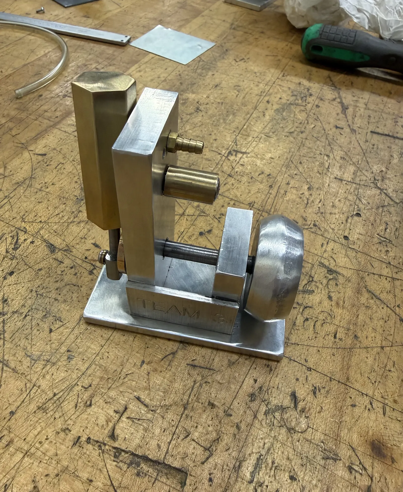
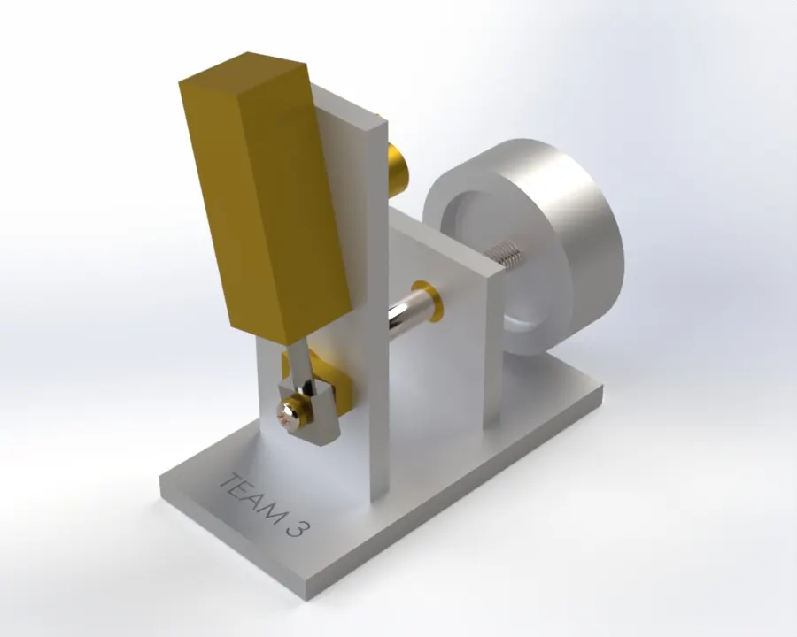
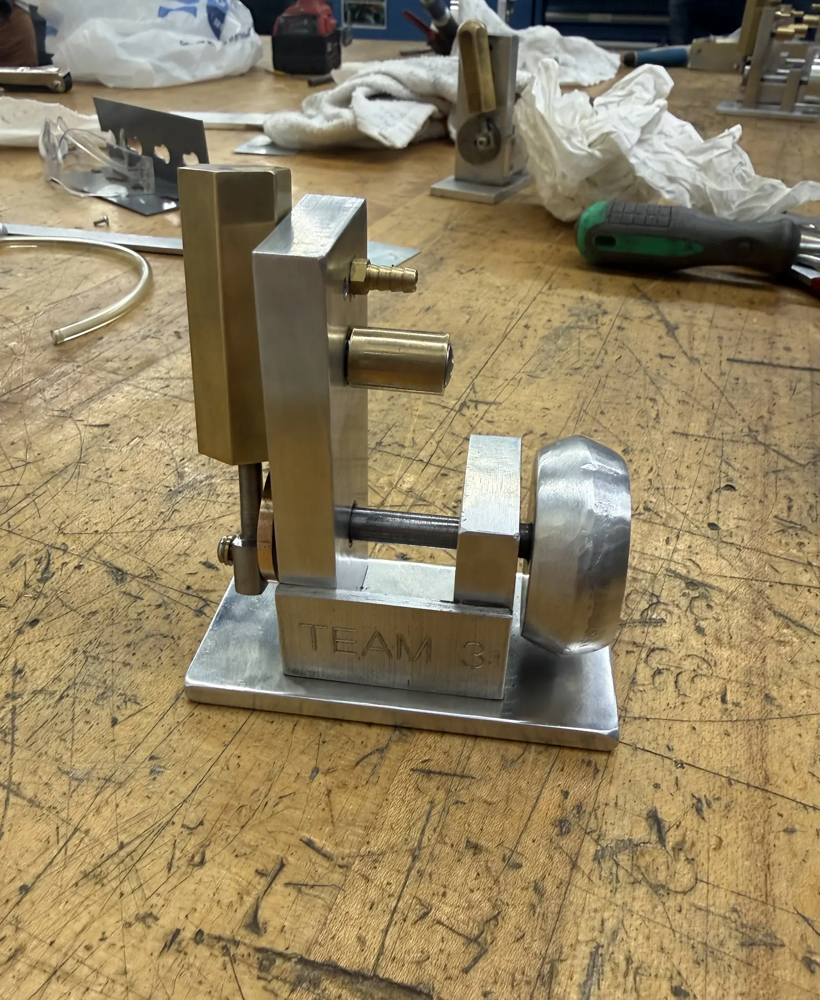
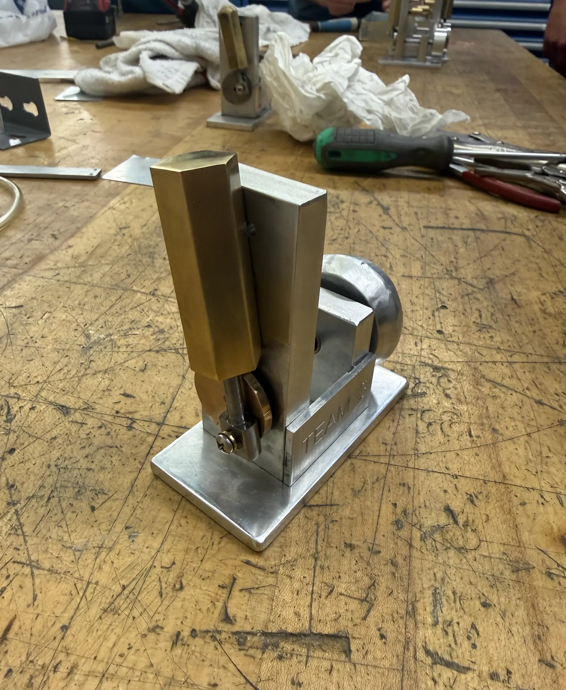
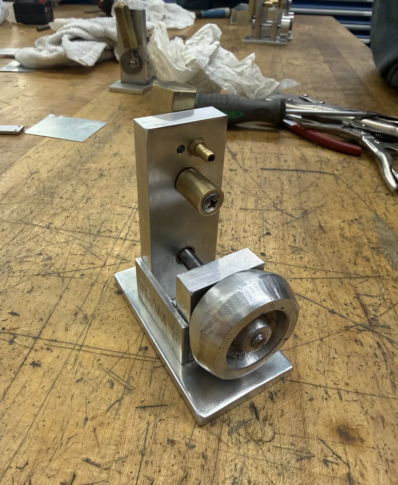

Pipsqueak Engine: Design for Manufacture
A team redesign of an existing one-cylinder "Pipsqueak" air-engine for low-volume production — simplifying the manufacturing process from CAD through machining, assembly, and a functioning physical engine.
- Team
- Team 3, BYU ME
- My Role
- Modeling, Machining, Assembly
- Tools
- SolidWorks, DFM
- Processes
- Manual Machining, Laser Cutting

Too Many Processes for the Volume
The team evaluated an existing one-cylinder Pipsqueak air-engine design for a production run of roughly 100–1,000 units annually. The original design called for a wide mix of processes — manual machining, CNC milling, sand casting, and powder metallurgy — that made it impractical to produce efficiently at that volume.

Consolidating Around Two Processes
The team redesigned several components to consolidate production around manual machining and laser cutting. The crank wheel moved from a round, powder-produced geometry to a rectangular, laser-cut arm; the cylinder changed from a hexagonal to a square cross-section to simplify fixturing and precision machining; and the flywheel was reworked around manual turning in place of sand casting. Other parts were adjusted to improve sheet-material utilization for the laser-cut components.
Drawing Package
With manual machining and laser cutting selected as the primary processes, the team produced toleranced drawings and an exploded assembly view identifying every part, its material, and its quantity.
From Drawing to Finished Part
I modeled, machined, and assembled components as part of the team, applying tolerancing, fits, and DFM principles from drawing to finished part.



A Working Engine
The redesigned engine was built into a functioning physical prototype — carrying the project from CAD and design-for-manufacture analysis through machined parts and a complete, assembled engine.